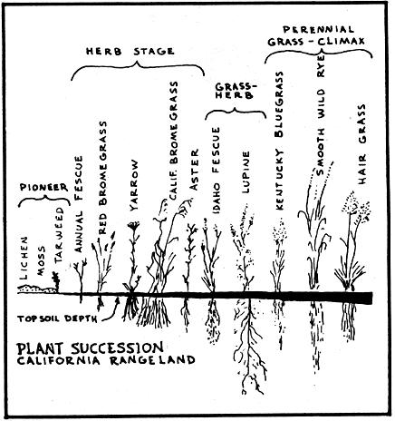
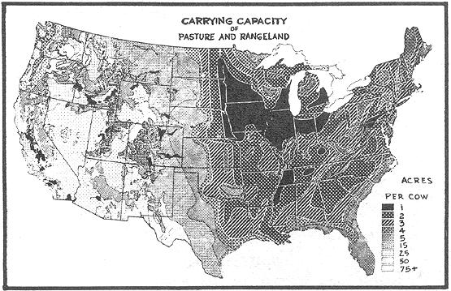
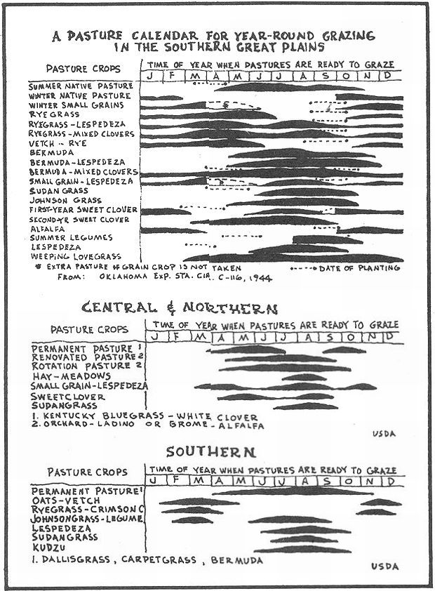
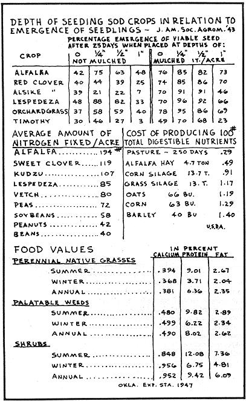
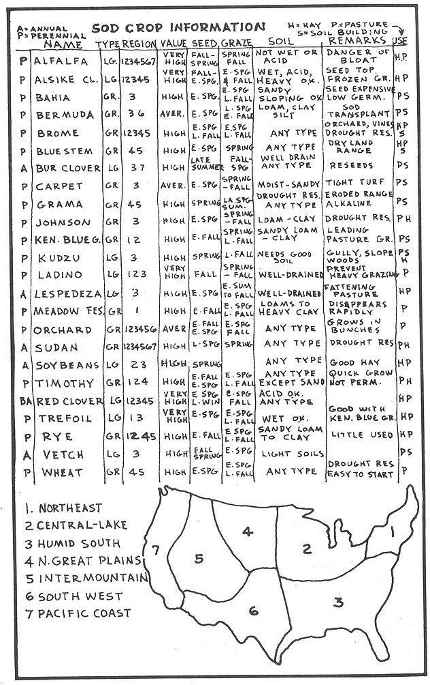
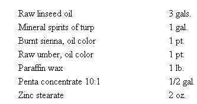

Sod cropping as defined in this chapter is a balanced method of farming which permits maximum output of soil resources while at the same time maintaining and improving them. It is a method that contrasts with Row Cropping (the subject content of the following chapter) in that sod cropping is basic to water and soil conservation, and essential-in rotation - for the maintenance of high level row crop production.
Without question, sod crops are the most important underdeveloped agricultural resource in the world today. This is true in spite of the fact that they have been around a long time: improved varieties such as alfalfa were known to the Persians and Romans before the time of Christ; clovers were grown in northern Europe in A.D. 800. There are at present 5,000 species of sod grasses in the world, and 1,500 of these are found in the U.S. This number does not include the hundreds of "natives" and weed varieties which agriculturalists refuse to include as economic to American fanning practice.
Due to the numbers involved, it is with some difficulty that we attempt a classification of sod cropping. Some crops are grown annually, some in rotation, and some permanently. Of the annuals, there are warm season and cool season varieties. Grasses are grown in companionship with other grasses or with legumes. And every plant species has an optimum soil and climate requirement. A high-producing sod crop may prove to be valueless on poor soil. And conversely, a sod crop considered undesirable in a productive soil-and-climatic-environment, may be highly regarded on a less desirable site: palatable short grasses like buffalo blue grama, silver bluestem, and sand dropseed are not grown to advantage on fertile sites.
Plant ecologists present the clearest perception of optimum plant development in the presentation of the Climax Growth concept. We are told that there is a subtle response between plants and changes in the environment. Individual plants become more abundant or less abundant in a community, depending upon soil and climate factors. One species is gradually replaced by another higher and more adapted variety, until finally vegetation attains the climax form characteristic of the soil and climate. This is a good explanation of why a climax sod crop is the only important soil builder of any consequence. When a native sod us plowed and put into rowcrop production, a climax has been destroyed but the soil remains productive for many years. When this happens in a humid forest situation the soil becomes unproductive after a few short years, of cultivation; the wider spacing of trees offers little root development and soil-aggregation buildup.
A sod growth, however, reaches climax as more and more topsoil is formed and accumulated. Each succession contributes to the next higher plant development. An example of California rangeland climax is illustrated below.
Climax succession is also apparent when overgrazed or cultivated land is abandoned and sod crops allowed to return: first, annual weeds (crab grass, pigweed, Russian thistle) appear; then so-called poverty grasses (wire grass, broom sedge) replace the native weeds; as the organic content of the soil increases, poverty grasses get so thick they cannot withstand their own competition. Thus, short-lived perennials like bunch grass appear and progress, finally, to semi-climax and climax grasses native to the region.
The importance that weeds play in this succession cannot be overstated. Weeds condition the soil; their vigorous root system opens up the soil, fiberizes it, and enlarges the feeding zone for the benefit of succeeding plants. Grass will return and thrive in a pasture situation only when weeds have first prepared the way; grass has the power to disperse the weeds once the environmental conditions are right.
The director of the Rocky Mountain Forest and Range Experiment Station, Dr. David Costello, studied the value of weeds on the western range. He found that weeds, surprisingly, made up the greater portion of cattle diet. Furthermore, perennial weeds and shrubs were found to have a higher crude protein content than native grasses. From Dr. Costello's research we deduce that low-protein grass pastures would best be grazed in summer when food values are highest. Superior pasture-containing abundant weeds and shrubs-should be grazed in late summer, fall and winter when the food value of grass is low. The nutrient value of standing grass herbage drops during fall and winter, because at that time nutrients drain back into the root zone, whereas the food value of browse plants remains high.
It was the Swiss dairymen who first demonstrated the value of harvesting immature forage. Alfalfa cut at a pre-bloom state has 28% protein and 12% mineral content; at full bloom it contains only 13% protein and 8% mineral. The Swiss also showed that grass under continuously heavy grazing is more nutritious than under light grazing. Frequent cutting promotes a continuous production of young, nutritious shoots. Young forage is more digestible and palatable as well.
I will show in the following chapter on row crops how their value depends primarily upon nitrogen and vitamin content. Now, except for the legume family, sod crops cannot accumulate large quantities of nitrogen. So it makes good agricultural sense to follow a sod crop (grass-legume mixture) with row crops (vegetables). This form of alternate husbandry is called Ley Farming, and it involves the full fertility cycle of crop-soil-animal relationship. A three-year sod cropping program rotates with a three-year row cropping. Ley farming becomes a rather good substitute for green manuring which may require a plowing under of the sod culture for possible soil enrichment.
Although it takes about seven acres of sod crops to equal the production of one acre of row crops, the nutrients supplied cost a fraction of the amount as that of row crops. The Bureau of Dairy Industry (USDA) made a four-year study of the relative cost of producing 100 pounds of totally digestible nutrients. It was found that the return from pasture crops per man-hour-labor is six times more than from corn, and ten times more than from barley.
And there is one other important sod-cropping statistic-this time provided by the Missouri Agricultural Research Station: on a land slope of three degrees, continuously cultivated soil erodes seven inches in 24 years; seven inches of continuously grown corn soil is eroded in 50 years; seven inches of continuously grown wheat soil is eroded in 100 years. But under continuously grown sod pasture it would take 3,000 years to erode seven inches of soil! It is little wonder that advocates of permanent pasture are so enthusiastic. Certainly every homestead would do well to include at least one permanent pasture. This pasture may be gown in companion with scattered tree crops as is often the case in southern forests of longleaf pine growing in open stands with an understory of sod crops. Most sod crops grow best and produce a higher protein level when grown in partial shade.
Although the major portion of permanent sod crops consists of perennial (self-seeding), and long-lived annuals, it may also include short-lived, aggressive and rapidly establishing species as Italian ryegrass. There is no hard-and-fast rule for determining optimum sod mixtures. Agriculturalists at one extreme favor "shotgun mixtures", the indiscriminate mixture of up to a dozen different species. Other experts advocate a two-seed, grass/ legume mix. Somewhere between these extremes lies essential, sod-growing knowledge usable by the small homesteader.
A well-balanced pasture community is analogous to well-made concrete: various plants combine to form a dense ground cover in the same way that sand and cement fill porous spaces around coarse aggregates. An example is the way broomgrass fills in around alfalfa, and ladino clover fills in around orchardgrass.
Since the time of George Washington ("Orchardgrass of all others is in my opinion the best mixture with clover") farmers knew that grass and legumes should be grown together. If grass is grown without a legume companion, nitrogen soil deficiency is likely and the crop will contain excessive energy-giving carbohydrates at the expense of mineral and protein content. If a legume pasture is seeded without a grass companion, more nitrogen becomes available than required; volunteer grasses and weeds will soon invade the legume. So in general it is prudent to sow half grass and half legume in a sod crop mixture. As mentioned in the previous chapter, legumes alone are able to obtain nitrogen from the atmosphere. Nitrogen is "fixed" by symbiotic bacteria which live in nodules on their roots. This is the reason why legumes are less sensitive than grasses to the level of nitrogen in the soil.
It has been found that the presence of a legume in a sod culture increases the protein content of the companion grass. Corn, for instance, that is gown with soybeans has twice the nitrogen content. The protein content of timothy hay can be increased by growing it with alfalfa. Grass also grows at a faster rate when a companion crop of legume is present. The yield of a grass crop can be doubled when red clover is included in the sod mixture.
Seed mixtures and proportions must be determined with great care. A choice is influenced more by soil and climate than any other factor. Temperature, soil moisture, latitude, altitude, soil pH and rainfall are main considerations. Alfalfa does poorly on wet undrained soils where alsike clover thrives. Studies at the Wisconsin Experiment Station show that an acre of bromegrass/alfalfa mixture provides as much pasturage as 2 1/2 acres of bluegrass. With an oat/soybean mixture, only the oats germinate and grow; an oat/field pea mixture, however, gives a balanced crop. Bromegrass matures early and crowds out red clover; timothy matures too late to make a satisfactory stand with alfalfa. But bromegrass/alfalfa and timothy/red clover are excellent mixtures.
The best companion crop is the one that gives the least competition . . . grass and legume mixtures should produce together for best results. One naturally wishes to extend the grazing season to as much of a year-round program as possible. To do this it may be necessary to have two or more separate pasturesone for cool season sod crops, and one for warm season sod crops. Warm season crops begin growth in late spring, with most growth during the summer. Cool season crops are seeded in the winter and start growth early the following spring. A dormant period occurs here in midsummer, but growth resumes in early fall.
For some unexplainable reason sod crop seeds give greater yields when they have undergone a freezing action to break their dormancy period. So it is preferable to broadcast seed by hand or with the use of a hand-operated whirlwind seeder (e.g., Cyclone Seeder) in the early winter . . . seed that falls on the gound will be covered by the freezing and thawing action throughout the winter months. This dispenses with expensive seed-drilling equipment and springtime tractor compaction of the soil.
Mulch planting is as important to sod cropping as it is to tree and row cropping. Nothing will do more to insure a successful sod crop than a light mulch applied at the time of seeding. Mulch conserves surface moisture and delays seed germination until the soil is sufficiently warm. It also protects seedlings from excessive wind and sun and unwanted plant competition.
A properly managed sod crop progam requires no tillage, no fertilization, no burning. One can begin his pasture operation with a luxurious stand of tall weeds and brush. A mowing machine or stalk shredder is first used to cut or beat up and scatter top growth. Sod crop seeding is done directly in the remaining stubble. The heavy trash covering on the ground is highly desirable, and the tall stubble helps to protect young seedlings. Stubble offers no competition to young sod crops for moisture and soil nutrients.
Mowing is the one essential management practice for successful sod cropping. It satisfies a number of necessary sod culture practices by (1) allowing tough parts of the plant to decompose, thereby improving soil structure; (2) making hay or silage from clippings; (3) providing uniformity of gazing and consequently greater total production and (4) maintaining an immature and more nutritious stage of growth. Cease mowing activities in early fall so good ground cover can grow for fall and early winter gazing, and so that the sod crop can be into the winter dormant season with plenty of gowth left.
There is one important rule to remember when mowing or grazing sod crops: TAKE HALF AND LEAVE HALF. Overgrazing is to be deplored. A plant's food manufacturing ability should be constantly maintained.
The goal of any serious pasture program is one of providing for year-round gazing. This is obviously possible in milder or moister climates, but requires concentrated planning in places where the ground remains frozen or covered with snow much of the winter. Pastures are rarely productive for more than a few months at a time, so in northern climates two or more permanent pastures and perhaps several fields for raising supplementary feeds are required to "weather through" gazing stock. In some cases it may be advisable to incorporate ration grazing: a small strip of pasture is cut off from the main field each day. A movable electric fence is customarily used to ration the food.
Modern agribusiness methods for animal feeding limit, the animal to a "dry lot" situation, with sod crops harvested and brought to the animals throughout the year. It makes little sense for the small homesteader to grow, harvest, haul, process, store and then ration feed for his animals when the animal can provide these functions in a more comfortable and sanitary manner out in the pasture. And it has already been pointed out that the dry matter or immature sod crops are higher in protein and nutrients and more palatable than dry matter from mature crops harvested for hay or silage. Research at the Virginia Agricultural Experiment Station shows that the nutrient yield of pasture is 50% greater than for the same crops that were allowed to mature and then cut for hay. Let the animal harvest its own food-and let it spread its own manure.
There is a final consideration in increasing the productiveness of sod crop pasturage: graze several combinations of animals on it simultaneously. Sheep and dairy cows do well on a pasture together; sheep will eat weeds and other plants refused by cows, and plants not required for high milk production. Goats tend to favor types of woody vegetation and are valuable in keeping brush from overtaking a pasture. It is a good practice to let beef cattle and hogs pasture together; hogs eat much of the vegetation overlooked or wasted by cattle.
At these northern regions where some form of winter feed supplement must be provided for, one has the choice of storing feed by drying or by silage. Each process has its pros and cons, so the best approach here is merely to acquaint the homesteader with some of the problems and prospects inherent in each method.
Hay-making involves mowing the crop, raking it into windrows, bailing or bunching, curing, leading, transporting and storing. As mentioned earlier, these processes exact about 50% of the nutrient value from the original crop. And if it rains during the haymaking process, molds may develop and plant nutrients may leach to lower the nutrient value even more. If the moisture content of hay is high at the time of storage (above 30%) heat will be generated during the time of storage. This heat destroys carotene and sometimes causes spontaneous ignition.
The loss of carotene in field-cured hay has stimulated agricultural re search toward improved curing processes. One such method of "barn curing" has been developed by the Virginia Experiment Station, with similar solutions proposed by the Tennessee Agricultural Experiment Station and T.V. A. Partially dried hay is placed over a duct system and hot air is forced out through the hay. Three to four times the amount of carotene is retained using this system of barn curing.
Despite the nutrient losses associated with hay-making, the small homesteader may still find it the most practical method for providing supplemental feed. For one thing the investment in equipment required to process loose hay is minimal. With a full mechanized setup, a ton of hay can be processed and stored by one man in two hours; with hand labor the same man can process and store a ton of hay in six hours. A mowing machine need be the only mechanical equipment required. Hand pitching hay onto a four-wheel trailer is fast and gratifying work. And unloading into a hay loft can be done with a small investment in power forks or slings.
Ensiling sod crops requires much more equipment and expensive storage facilities, though the storage size can be reduced considerably. Loose hay takes four times and baled hay two times as much space as an equivalent amount of dry matter in silage. Silage is not a new process: the Romans knew that crops could be preserved by excluding air. As chopped sod crops are placed in airtight silos, air is driven out by the settling and compaction of the crop. Fermentation takes place as oxygen is replaced by carbon dioxide. Natural carbohydrates are reduced to acids (lactic and acetic) by microbial action. After the oxygen is eliminated silage will keep almost indefinitely. For this reason it is important to force all air pockets out as the silo becomes filled.
Trench silos are the latest development in sod crop preservation. In many cases they may prove advantageous to the homesteader, so some of the improved designs are presented here.
A final understanding of sod cropping can be gained from a thorough study of the chart with this section.
If nothing else is learned from studying the series of chapters in this volume, it is hoped that the amateur home builder will at least be in position to ridicule the main slogan of the organized trades: "Relax-let an expert do it." We should not think of an expert builder as a special kind of man. We should rather think of every man as a special kind of builder, planning and working, perhaps with his wife, to meet the unique needs of the growing family. A certain romance surrounds the home building efforts of a congenial and loving husband-wife team.
It must be confessed that, from correspondence here, it appears that many amateur building attempts met with dismal failure; the owner-builder suffered a major disability owing to careless accident; or he was sidetracked by divorce arising from strained family relations; or he grew weary of well-doing, and relinquished his builder role to the ever-ready vulture-like subcontractor.
Such owner-builder experiences appear tragic to outsiders and humorous to those inside the building field. Yet any amateur building experience is the growing edge of the fundamental relationship among builder, tools, materials, and home that makes a man a man, homus faber. The successful amateur builders do not send woeful letters here; they build. Those of us who have had experience within the fold of the "expert" building industry realize that the only expertise offered is what stems from the grasping of as much monetary return as the traffic will bear. The commercial builder is not, of course, a bad man at heart; but, in addition to the profit motive, he is encumbered with tedious distractions and involvements; unfair competition, unions, estimates, insurance, loans, taxes, contracts, licenses, permits, office overhead, memberships, and dues. But these are only the surface requirements that have to be met before the contractor can start a project: The really vicious aspects of conventional building construction are far more subtle-especially as the building specialists themselves are seldom aware of the corruptions within their own field. This general observation can best be illustrated, perhaps, by a brief historical account of the painting art in reference to building.
Credit for being the first painter known to the West will have to be shared by Noah of Biblical fame and the Cro-Magnon Reindeer Man. After his well-known ark was completed, Noah "pitched it within and without." Pitch (asphaltum) is still used by varnish manufacturers to produce protective coatings. Pre-historic cave man, it seems, was more interested in the decorative aspects of paint. He mixed simple earth colors with animal fats and painted the walls of his cave-houses.
Decorative painting assumed an important role in the lives of Babylonian, Egyptian, Greek and Roman ruling classes. White lead was extracted and used as early as 430 B.C. by the Romans. In medieval times the people used paint to decorate and protect the spokes of their carts and the handles of their various agricultural implements.
With the advent of the Renaissance came the guild organization of master, journeyman and apprentice. The formation of the Old English "Payntour-Steynor" guild in the 13th century laid the groundwork for our equally hidebound unions and trade organizations. In the early history of painting guilds are items that might have come from a contemporary grievance committee:
In 1488 the Mayor was petitioned to halt the ingress of "foreyns" (outsiders) from working in the city limits, there by taking work from members of the guild . . . In 1502 the Companies of Painters and Stainers were united into one company . . . In 1575 the Payntours-Steynors petitioned the Queen against Plasterers who were infringing on their paint ing work.
In 1581 the Payntours-Steynors received a new charter, seal and license from Queen Elizabeth. This new ordinance required seven years' apprenticeship, except from the genteel class who were permitted to paint for their own private pleasure. No person was allowed to instruct another in the art, unless that person be an apprentice bound for seven years. All work had to be approved by the Masters and Wardens. Masters and Wardens had rights to enter any building for inspection and approval. They had the power to impose fines or destroy the work if it fell below standards. The oaths of all members required them to keep "the secrets of the mistery, and not reveal these same except to apprentices and report all evils to the Company."
In 1606 it was determined that the price for laying color or oil paint upon any flat surface must be sixteen pense per day. Later the cost was figured by the square yard of surface covered. The work day was stipulated to be from 6 a.m. to 6 p.m. As the Company grew in size and political strength, it started labor exchanges for the employment of painters. These became meeting places and finally evolved into our current labor unions. Masters and Wardens founded The Institute of British Decorators which in this country is called the Painting and Decorating Contractors of America.
Nothing much has really changed today in the painting industry from the formation of the first medieval closed shop. Modern house painters have their own particular brand of price-fixing exclusiveness; and their union, too, is careful to enforce maximum-size brush widths and to outlaw fast-working renegade spray or roller equipment. Thank God, a man may still work on his own home. And thanks to a tremendous chemical advance in recent years with unbiased reports from countless agencies, the "secrets of the mistery" are no longer the private property of an inner circle!
The chemical advance has been very rapid. It has not been long since a painter himself mixed and ground his paints. His pigment was first zinc, then the improved titanium dioxide-first used in 1920. From earliest days he had used linseed oil as binder or vehicle.
Then in 1930 we had what is known in the industry as the alkyd revolution. Alkyd resin has all but replaced linseed oil in commercially prepared paints. More recently the synthetic paint industry has developed other remarkable vehicles such as phenolics, vinyls, urethanes, silicones, epoxies, acrylics and latex.
Exterior wood siding should not have to be painted less than six years after the first application. Planed lumber requires more frequent treatment than rough-sawn or rough-planed wood. As a matter of fact, rough-sawn redwood and cedar weather beautifully without any preservation whatever. Experimentally-minded home builders have found that any number of natural finishes can be concocted from readily available inexpensive materials. To create an aged-appearing flat finish, a mixture of discarded crankcase oil and gasoline has been used with success on roughsawn siding. A mixture of creosote and pigment-stain is another often-used natural finish. After several years a second coat of clear creosote and oil mixture is applied to restore protective qualities.
Conventional exterior paint uses titanium dioxide as the white paint-solid, and linseed oil and mineral spirits as the nonvolatile and volatile ingredients of the vehicle. But alkyds are more stain-and-blister-and-mildew-resistant than linseed oil paints. The finish coat should have zinc oxide pigments in it to control the rate of chalking. As a paint ages it collects dirt, changes color, and chalks. If the paint is correctly controlled, rain will wash off the dirt along with the chalking. The chalking effect is thus utilized to keep the paint cleaner and brighter, and so to prolong its usefulness. Applying a prime coat of shellac or aluminum paint over knotholes and flat-grained siding is an especially good practice.
Lacquer and varnish films break down sooner on outside exposure than do regular paints having protective pigments. The use of three coats of a high grade spar varnish is a minimum requirement for an outside transparent finish. Butyl phenol resin-based varnishes are definitely superior to the old type in hardness, durability and water resistance.
Polyurethane-based, phenolic gum and phenolic tung oil are the best commercially available natural finishes, though they last only two years at the longest. An eight-year natural finish was developed some years ago by the Forest Products Laboratory, which publishes this formula for a 5-gallon batch, cedar color:
Pour the gallon of mineral spirits into a 5-gal., open-top can. Put paraffin and zinc stearate in another pan and heat over flame, stirring until uniform mixture results. Pour this into the mineral spirits, stirring vigorously. Keep flame away from mineral spirits. When solution has cooled to room temperature, add pentachlorophenol concentrate, then linseed. Stir in colors until mixture is uniform, and it's ready for use. For redwood color, use 1/2 pt. burnt sienna and 1/2 pt. raw umber, plus 1 pt. pure red oxide color-in-oil.
Shingle stains can be used also on rough-sawn siding. Linseed or oil-modified alkyd coatings are the best here, as a porous paint film is necessary to allow moisture to escape and thereby prevent blistering. Regular shingle stain is composed of a color dissolved in oil-containing solvents and a wood preservative such as creosote. Preservation of the shingle depends upon adequate penetration of the stain rather than the formation of a protective outside film, while with regular paint, on the contrary, adhesion of the film to the surface is more important than penetration.
It has been found that 90% of all paint failures are due to the poor lumber used as the base-mainly the high moisture content of the wood, or moisture entering the back side of the wood after it has been painted-through condensation due to faulty gutter and flashing. Blistering is a common result of moisture destroying the paint bond. Paint will adhere best to slow-grown spring wood and will tend to peel from fast-grown summer wood. Paint will also last longer upon narrow-band, edge-grain boards than upon wide-band, flat-grain boards.
Alligatoring, the final stage of checking, is one common paint-mixture deficiency. It results from having too much oil in the prime coat. The prime coat should always be harder than the final coat. For this reason it is important to allow plenty of time between coats, as exposure to the air causes a hardening action (oxidation) to take place. The final coat should be elastic enough to respond to the expansion and contraction of weather change.
Lacquer, shellac, spar varnish, linseed, or alkyd can all be used on interior wood paneling and plywood. Alkyd is an excellent sealer for plywood. Alkyd gloss or semi-gloss paint will last as long and retain color as well as any paint now sold. If a colored surface is desired, one of the styrene-butadiene, polyvinyl acetate, or acrylic latex paints is an excellent choice. Already, the greatest volume of water-emulsion paint sold in the United States is of the latex type. Such paints dry rapidly, are easily applied, have no odor, have good scrub resistance (after hardening), excellent penetration, and good color-uniformity.
Latex paints have proven to be the foremost choice for interior as well as exterior masonry surfaces. Styrene-butadiene (rubber latex) pioneered among latex paints in this country. It out-performs by far the best oil-based paints on the market. It is the least expensive of all latex paints and is best used on inside masonry basement walls, owing to its water-repellent and alkali-resistant qualities.
Cement-water paint has been the traditionally accepted waterproofing material for masonry surfaces, especially porous concrete block walls. The portland cement content should be not less than 65% by weight of the total paint. Fine, sharp silica sand and/or hydrated lime make up the balance. The paint must be applied to damp walls for proper adhesion.
Whitewash is an inexpensive, even older, and still used masonry coating. The National Lime Association suggests a formula having 5 lbs. of casein dissolved in 2 gals. of hot water, 3 lbs. of trisodium phosphate dissolved in 3 gals. of water, 3 pints of formaldehyde mixed in 3 gals. of water, all added to 8 gals. of lime paste (50 lbs. of hydrated lime mixed with 6 gals. of water). The lime coating is applied to damp walls, and dries to an opaque, hard, dust-free finish.
Polyvinyl acetate and acrylic have excellent color-retention and water-resistant qualities on outside masonry surfaces, asbestos cement, and asphalt shingles. Resin-based urethane is a new concrete floor varnish that is claimed to outlast other floor varnishes three to five times. Chlorinated rubber and phenolic are used where the floor is exposed to acids, alkalis, salt and other corrosive elements.
There are a number of factors that influence the proper choice of masonry paints. Cement-swater paints, for instance, are more suitable for new, and therefore damp, walls containing water-soluble alkaline salts and open-textured surfaces. Resin-emulsion paints are better for dry, close-textured surfaces such as cast concrete, asbestos-cement siding, tile, etc. Oil paints are best used on masonry surfaces that are dry at the time of painting and remain dry afterward.
Corrosion (rust) is a common problem when using exposed metal in building construction. Zinc-dust paint is about the only primer that will adhere satisfactorily to galvanized metal surfaces. In priming steel, "red lead," iron oxide, or zinc chromate in linseed, alkyd, or phenolic vehicles is satisfactory. A linseed or alkyd finish coat is then applied. The best preservant for tarpaper roofs is a commercial asphalt varnish mixed with aluminum powder. Upon application the aluminum flakes float to the surface and give a metallic finish. These paints combine excellent durability with reflective roof-coating features.
These recommendations on paint materials deal with only one small segment of the total painting problem. Equally important, a painter must understand the "paintable" characteristics of different surfaces. He must choose and use correctly the various tools of the trade. Finally, his method of procedure must be correctly established-such as painting the house exterior before the interior, and painting the ceiling before the walls before the woodwork before the floor before the baseboard.
A good-quality paint brush will have more long-length bristles than short-length bristles-to insure proper paint absorption. Stiff and soft bristles are correctly proportioned to allow for proper paint retention. Some of the newer quality nylon brushes are as good as the traditionally superior Chinese hog bristle ones.
In many cases the paint roller will do a faster and better-appearing job than the brush. It can be used for applying any kind of paint; but the surface to be painted will determine the cover nap (roller cover) size; the smoother the surface, the shorter the nap should be.
In view of the multitude of technical details covered in these chapters, the would-be owner-builder may throw up his hands and sigh that the stuff is all too much to take in. But consider. The details set down here are meant to meet the various needs and interests of almost all possible owner-builders. They are not all meant for you. You will select from this material just what will help you. Perhaps you need note but one-tenth or one-twentieth of the observations these chapters offer. A student in a university architectural school must become familiar with all use-and-beauty building ideas in every country from the year one until the present. But that is not you. You are going to build, most likely, just one home for one family.
Building a home should not be the formidable project that it happens to be for some would-be owner-builders today. Land should be assigned without charge by the local community for house building and other improvements. Money should be loaned by the community bank without charge. There should be counsel and help from friendly neighbors who have already built their homes.
Lacking this home-owner's heaven at present, you may have to scout for desirable land at a moderate price, have some capital somehow to begin operations, and then perhaps work on and off for several years before you can move into your home. But that will be your family's haven in perpetuity and, if enlarged and adapted, perhaps for children's families. Building can be fun, especially if you are building together with someone. A house is not a home. Land is the home on which you erect a dwelling and several smaller buildings for work and appreciation. Your home should grow through your lifetime-and after.
There is nothing more desirable in this world than love; and nothing is better suited to cultivate love than a nature-based home of your own. Building your own home today, furthermore, is not a merely private affair. It belongs to the movement of freedom from America's religious, political and economic straitjacket comparable to the movement of our freedom-loving forefathers from Britain and Europe to these shores. We have grown accustomed to finding some sort of lodging wherever we can, if lucky, find employment, and to re-moving (on the average) every three years. This sort of thing cannot fitly be called human living. Today's revolution will occur when employment, including political, economic and technical operations, shall become a means to the tender love, personal growth, and spontaneous artistry of settled home life.
BIBLIOGRAPHY (books listed in order of importance)
Painting and Decorating Craftsman's Manual: Painting and Decorating Contractors of America, Chicago, 1961.
Field Applied Paints and Coatings: National Research Council, 1959.
Paints For Exterior Masonry Walls: U.S. Department of Commerce publication, BMS 110.
|
 |
 |
 |
|
 |
 |
 |